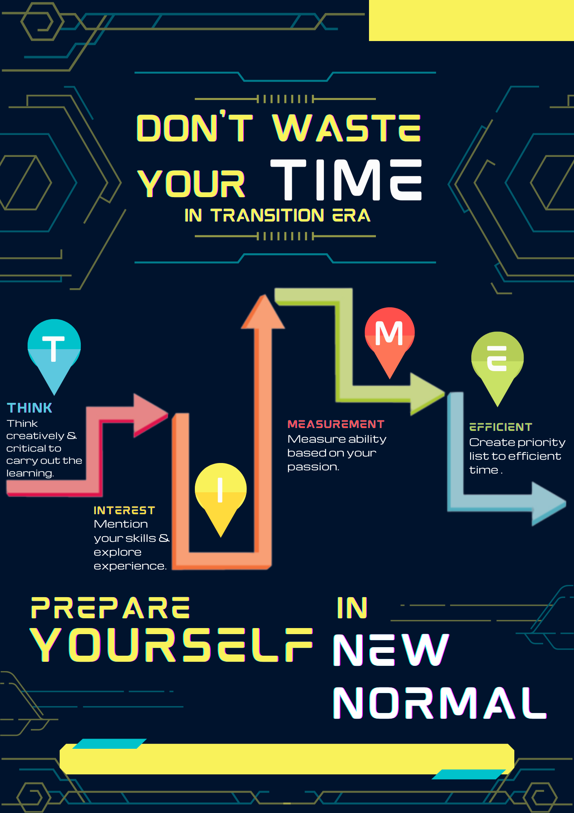

IT Development | Web Designer | Fullstack Developer
Portfolio
About
I am a passionate Full-Stack Developer with a strong interest in web and mobile development, as well as data and machine learning. With expertise in both front-end and back-end technologies, I strive to create efficient, easy-to-use, and scalable solutions. My enthusiasm for exploring the potential of data and machine learning drives me to constantly learn and innovate, turning complex problems into impactful digital products. Always eager to take on new challenges, I am committed todelivering high-quality results and staying ahead of technologicaladvancements.
In 2024 I founded a freelance group called SkyNest Solution. SkyNest Solution is a group of freelancers experienced in webdevelopment, mobile applications, and integrated IT solutions. With expertise in various technologies and frameworks, we areready to help turn your ideas into innovative and functionaldigital products. Our focus is to provide solutions that suitbusiness needs, from responsive website development, AndroidiOS-based mobile applications, to IT systems that support companyoperations efficiently.
Contact Me
On Social Media
Smart Three
SMART THREE merupakan aplikasi edukasi yang berkonsep seperti pembelajaran online. SMART THREE berasal dari kata "smart" yang berarti pintar dan "three" sebagai urutan kelompok yang menjalankan tugas.
UI aplikasi SMART THREE dibangun berbasis mobile. UI aplikasi ini dibuat untuk memenuhi salah satu tugas pada mata kuliah Interaksi Manusia dan Komputer.
Jagratara Delapan Empat
Pada 27 Februari 2025, saya bersama tim SkyNest Solution berhasil menyelesaikan pengembangan website company profile untuk PT. Setiap Hari Projek dengan nama proyek Website Setiap Hari Projek.
Website ini dirancang sebagai media representatif perusahaan untuk menampilkan profil, layanan, serta portofolio proyek secara profesional dan informatif.
Adapun fitur utama yang dikembangkan dalam proyek ini meliputi:
Halaman Home sebagai landing page informatif dan representatif.
Halaman About untuk menampilkan profil dan identitas perusahaan.
Halaman Works untuk menampilkan portofolio dan proyek yang telah dikerjakan.
Halaman Contact untuk memudahkan komunikasi dengan calon klien.
Content Management System (CMS) berbasis admin panel, yang memungkinkan pengelolaan dan pembaruan konten website secara dinamis melalui backend.
Pada 27 Februari 2025, saya bersama tim SkyNest Solution berhasil menyelesaikan pengembangan website company profile untuk PT. Setiap Hari Projek dengan nama proyek Website Setiap Hari Projek.
Website ini dirancang sebagai media representatif perusahaan untuk menampilkan profil, layanan, serta portofolio proyek secara profesional dan informatif.
Adapun fitur utama yang dikembangkan dalam proyek ini meliputi:
Halaman Home sebagai landing page informatif dan representatif.
Halaman About untuk menampilkan profil dan identitas perusahaan.
Halaman Works untuk menampilkan portofolio dan proyek yang telah dikerjakan.
Halaman Contact untuk memudahkan komunikasi dengan calon klien.
Content Management System (CMS) berbasis admin panel, yang memungkinkan pengelolaan dan pembaruan konten website secara dinamis melalui backend.
Pada 1 November 2024, saya bersama tim SkyNest Solution berhasil menyelesaikan pengembangan website company profile SHP Compro untuk PT. Satya Haprabu Perkasa.
Website ini dirancang sebagai media digital resmi perusahaan untuk menampilkan profil, layanan, informasi karier, serta mendukung kebutuhan komunikasi perusahaan secara profesional dan terintegrasi.
Adapun fitur utama yang dikembangkan dalam proyek SHP Compro meliputi:
Halaman Home sebagai landing page utama perusahaan.
Halaman About SHP untuk menampilkan profil dan identitas perusahaan.
Beberapa halaman Services untuk menjelaskan layanan yang ditawarkan secara detail.
Halaman Career untuk informasi lowongan dan peluang kerja.
Halaman Contact Us sebagai sarana komunikasi dengan klien maupun mitra.
Content Management System (CMS) berbasis admin panel, yang memungkinkan pembaruan konten website secara dinamis melalui backend.
Fitur Download dan Preview dokumen Company Profile PT. Satya Haprabu Perkasa.
Integrasi navigasi ke Website SHP Entertainment (Setiap Hari Projek) melalui menu navbar untuk mendukung konektivitas antar entitas bisnis.
Inspiring Audit V3 merupakan pengembangan lanjutan dari versi sebelumnya (V2) dengan fokus pada peningkatan fungsionalitas dan pengelolaan konten internal. Pada versi ini, dilakukan penambahan modul baru serta pengembangan fitur untuk mendukung kebutuhan dokumentasi dan peningkatan kompetensi karyawan.
Pengembangan pada versi V3 meliputi:
Penambahan Modul "The Palugada" sebagai pusat dokumentasi dan penyimpanan materi.
Fitur Upload Materi Peningkatan Kompetensi Karyawan, yang memungkinkan admin mengelola dan mendistribusikan materi pembelajaran.
Fitur Download dan View Materi, sehingga karyawan dapat mengakses materi secara langsung melalui portal.
Fitur Pengaturan Pop-Up (Dynamic Pop-Up Setting) yang dapat dikonfigurasi untuk ditampilkan setiap kali pengguna memuat halaman portal.
Inspiring Audit V2
Inspiring Audit V2 merupakan pengembangan lanjutan dari versi sebelumnya (V1). Platform ini adalah website internal yang digunakan oleh salah satu instansi pemerintah sebagai media pengelolaan informasi dan administrasi internal.
Pada versi V2, dilakukan pengembangan dengan menambahkan Modul Diklat Pegawai (Arsip) guna mendukung pengelolaan data pendidikan dan pelatihan pegawai secara lebih terstruktur dan terintegrasi.
Adapun fitur yang dikembangkan pada versi ini meliputi:
Fitur Add Data Diklat, yang memungkinkan input data diklat baik untuk satu maupun lebih dari satu kegiatan pelatihan dalam satu proses.
Fitur Filter Diklat Perorangan, untuk menampilkan data pelatihan berdasarkan nama pegawai dan tahun tertentu seingga memudahkan pencarian dan monitoring riwayat pelatihan karyawan.
Fitur Export Data Diklat, dengan opsi unduh dalam format Excel atau PDF, guna mendukung kebutuhan pelaporan dan dokumentasi resmi.
Sazan Shop
Sazan Shop merupakan dummy project berupa website marketplace yang dikembangkan untuk memfasilitasi aktivitas jual beli berbagai produk. Proyek ini dibangun dan dijalankan pada lingkungan localhost sebagai bagian dari proses pengembangan dan pengujian sistem.
Sazan Shop dikembangkan secara berkelompok untuk memenuhi salah satu tugas pada mata kuliah Basis Data Lanjut, dengan fokus pada perancangan database, implementasi relasi antar tabel, serta integrasi sistem dengan aplikasi berbasis web.
Berikut repository source code :
https://github.com/NazriTantowi/tubesBDL atau https://github.com/sayyiddrr/toko_online
WinWin Apps
WinWin Apps merupakan aplikasi berbasis konsep skill exchange platform yang mengadopsi mekanisme matching layaknya aplikasi dating. Aplikasi ini dirancang untuk mempertemukan pengguna yang ingin saling bertukar kemampuan secara gratis dan kolaboratif.
Tujuan utama pengembangan WinWin Apps adalah menyediakan wadah bagi individu yang ingin meningkatkan keterampilan tertentu tanpa biaya, dengan memanfaatkan fitur match system. Sistem akan menghubungkan dua pengguna yang memiliki minat saling melengkapi dan hanya akan memfasilitasi pertukaran kemampuan apabila kedua belah pihak menyatakan persetujuan.
Pantau Stunting
Pantau Stunting merupakan hasil project Tugas Akhir saya. Pantau Stunting memiliki 3 fitur yaitu cek status gizi balita, tanya jawab seputar gizi balita secara umum, dan informasi gizi balita secara umum.
Pantau Stunting memanfaatkan model Machine Learning untuk memprediksi status gizi balita (fitur cek status gizi balita). Selain itu, fitur tanya jawab dikembangkan berdasarkan keyword yang berpeluang ditanyakan oleh user dan fitur informasi gizi balita dikembangkan dengan mengirimkan broadcast berupa gambar penjelasan.
Simple T-Shirt Design merupakan salah satu design kaos yang bertuliskan "All Is Good" dengan konsep after wash t-shirt.
Don't Waste Your Time In Transition Era

Topic : Going Easy To Adaptive in Transition Time
Poster Description :
The outbreak of COVID-19 (pandemic) has been impact on many fields. One of the effect : cultural factors becomes in certain social conditions in perceive time. The process negatively affected time management as it created psychological pressure and wasted time, this changed the perception of time by making the time to pass quickly, that people were motivation problems arising from the focus and lack of explanations about the lessons and family factors. Regarding the negative effects of the COVID-19 in time management, this poster aimed to provide solution "how prepare yourself to perceive time" in transition era.